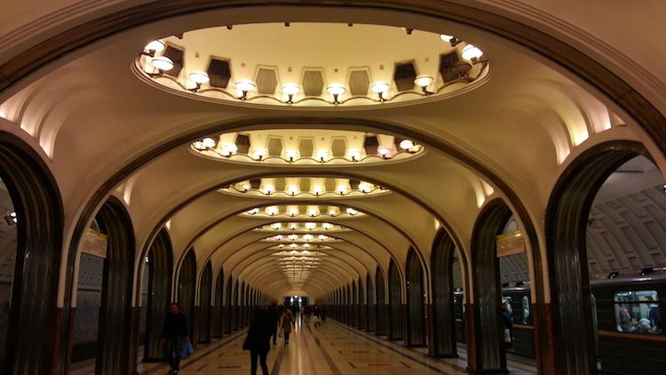

地铁
莫斯科有 11 条地铁线路，全市有 150 多个站口，是世界最繁忙的铁 路线之一，莫斯科的地铁站以独具艺术的壁画和吊灯著称，堪称“地下 的艺术殿堂”，环线上的共青团站 Komsomolskaya 和新镇站 No – voslobodskaya 是比较知名的地铁站，里边的壁画都极具特色，又有 故事性，绿线上的马雅可夫斯基站（ Mayakovskaya ）是莫斯科最深 的地铁站。

图：莫斯科地铁内部
运营时间： 5：30- 次日 1：30 。
票价：单程30卢布 / 人 / 次（不限距离）， 135 卢比 / 人 5 次， 265 卢布 / 人 /10 次。
如何购买：车站内的购票亭 Kassa 或自动售票机购买，一般单程票可 以选择使用售票机购买，有英文提示，在购票亭可以购买包月卡（ 1710 卢布， 30 天之内不限乘次； 1230 卢布可在自然月内乘坐 70 次）
小贴士：
1、地铁内站的标识有英文和俄文，但是报站都是俄文报站，所以随时携带一份俄-英对照地图很有必要，为了方便民众，每条线路还标上了不同的颜色，在地图上，1号线是红色的，就叫红线；2号线是 号线是 绿色的，就是绿线，还有橘黄线，灰线，蓝线，紫线等。
2、在地铁里要特别注意小偷。
如欲获得更多地铁线路信息，请查看以下网站。
网址：www.dir126.com
公共巴士
莫斯科公交车班次频繁而且密集，很多线路还同时运行有轨电车。
票价：在车站售票厅买是单程 24 卢布，上车之后再买为单程 28 卢布。
运营时间： 5：30- 次日 1：00
计程车
莫斯科出租车较少，在街上最乍眼的就是 New Yellow Taxi （Novoye Zholtoye Taxi） 。
一般来说，司机都会打表，车资起步价为 250 卢布， 但是也可以跟司机议价，节假日和没有公共交通时，比较贵。
可以在网上预约叫车：http://welcometaxi.ru/
小提示：正规的出租车少，黑车极黑，专宰国外游客，必须注意。

图：莫斯科出租车
租车
在莫斯科租车十分方便，国际知名的租车公司在莫斯科都有分布，可以在网上预约好，但是要记得准备好相关的驾驶文件。
驾驶文件：
有效的中国驾照就可以在俄国驾驶车辆，若办好俄文公证的驾驶证书会更好。
莫斯科水上公交船
莫斯科有像威尼斯一样的“水上巴士”，这条航线有 7 个停靠点， 从 Keivsky vokzal 起，经过市中心，到达 Novospassky 桥（距离 Proletarskaya 地铁站半英里），单程约90分钟，水上公交是不错的 选择，不但避免了公路上的拥挤，又能欣赏到河边莫斯科的经典建筑。
运营时间：每年 5-10 月的 11 ： 00- 21 ：00 ，每 20 分钟一班，费用 450 卢布。
详情请见网站：www.cck-ship.ru
轻轨
莫斯科目前拥有 1 条轻轨，位于莫斯科南部，连接 9 号线南端终点处， 地铁票通用
运营时间： 5：30- 次日 1：30 。
票价：单程30卢布 / 人 / 次。
如何购买：通票或储值票需要到车站内的柜台（Ticket office）购买， 一般单程票可以选择使用售票机购买。 单轨线路（ Monorail Transport System ） M1
莫斯科目前拥有 1 条单轨线路，位于莫斯科北部，连接 Timiry – azevskaya 地铁站和 Sergeya Eisensteina ，地铁票通用。
运营时间： 7 ： 00-23：00 。
票价：单程 28 卢布 / 次。
如何购买：需要到车站内的柜台（ Ticket office ）购买，一般单程票 可以选择使用售票机购买。